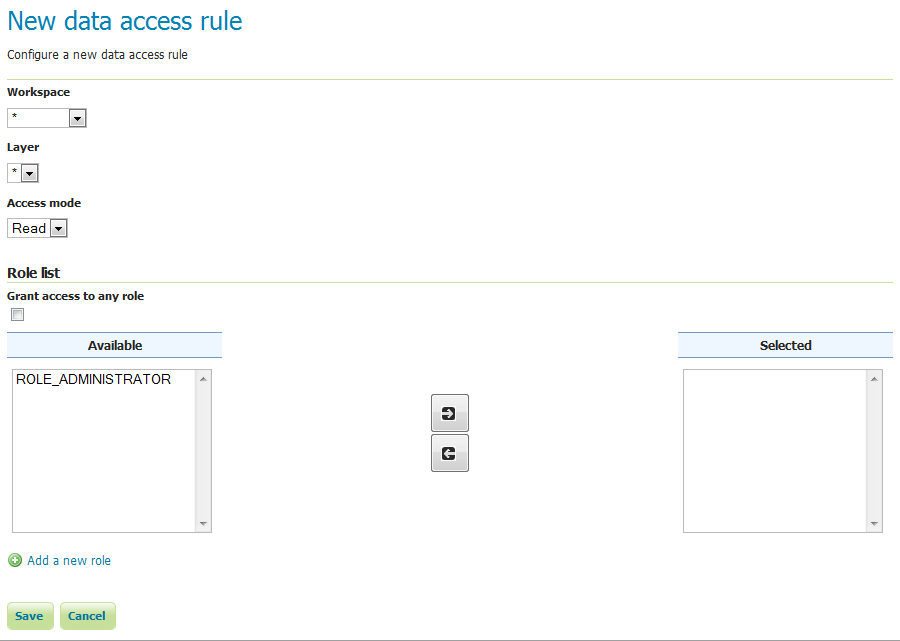
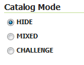

Data¶
이 섹션에서 데이터 관리 및 Layer security에 관련된 보안 설정에 대해 설명합니다. 롤은 데이터에 접근할 수 있으며, 사용자 및 그룹은 롤을 가질 수 있습니다.
Rules¶
기본적으로 2가지 규칙(rule)을 사용할 수 있지만 초기 상태에서는 접근(access)에 대해 어떤 제약도 걸지 않습니다. 첫번째 규칙은 *.*.r로 표현되며, 모든 롤에 적용되어 어떤 작업공간의 어떤 자원의 어떤 작업이든지 읽을(read) 수 있다는 규칙입니다. 두번째 규칙은 *.*.w로 표현되며, 역시 모든 롤에 적용되어 어떤 작업공간의 어떤 자원의 어떤 작업이든지 쓸(write) 수 있다는 규칙입니다.

데이터 접근 규칙
기존 규칙을 클릭해서 편집할 수 있으며, Add a new rule 링크를 클릭해서 새로운 규칙을 생성할 수도 있습니다.

새로운 규칙 생성하기
| 옵션 | 설명 |
|---|---|
| Workspace | 새 규칙을 적용할 작업공간을 설정합니다. 모든 작업공간을 의미하는 * 값이나 각 작업공간의 명칭을 입력할 수 있습니다. |
| Layer | 새 규칙을 적용할 레이어를 설정합니다. 모든 작업공간을 의미하는 * 값이나 위 작업공간의 각 레이어명을 입력할 수 있습니다. 작업공간을 설정하기 전에는 비활성화 상태입니다. |
| Access mode | 새 규칙이 읽기(Read) 모드인지 쓰기(Write) 모드인지 지정합니다. |
| Grant access to any role | 이 옵션을 체크하면 새 규칙을 적용할 롤을 지정할 필요 없이 모든 롤에 적용됩니다. |
| Role list | 규칙이 적용된 롤 목록을 포함한 전체 롤 목록입니다. 화살표 버튼으로 규칙 적용 여부를 전환(toggle)할 수 있습니다. Grant access to any role 옵션을 체크했다면 이 옵션은 적용되지 않습니다. |
| Add a new role | 새로운 롤을 추가하기 위한 링크입니다. |
Catalog Mode¶
GeoServer가 어떻게 보안된 레이어를 외부에 알리는지, 또 외부에서 필요 권한 없이 보안된 레이어에 접근할 경우 어떻게 반응할지 결정하는 모드입니다. HIDE, MIXED, CHALLENGE 3가지 옵션이 있습니다. 이 옵션들에 대해 더 자세히 알고 싶다면 Layer security 섹션을 참조하십시오.

Catalog 모드
다음: Services